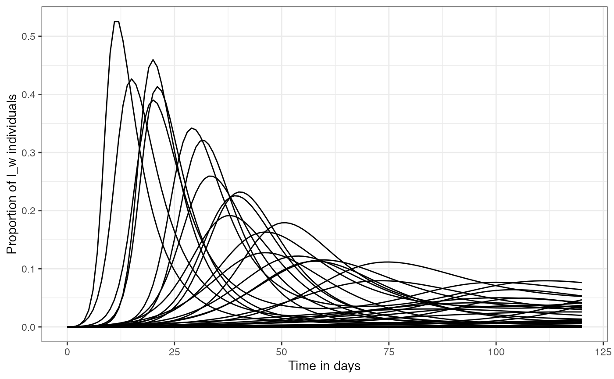
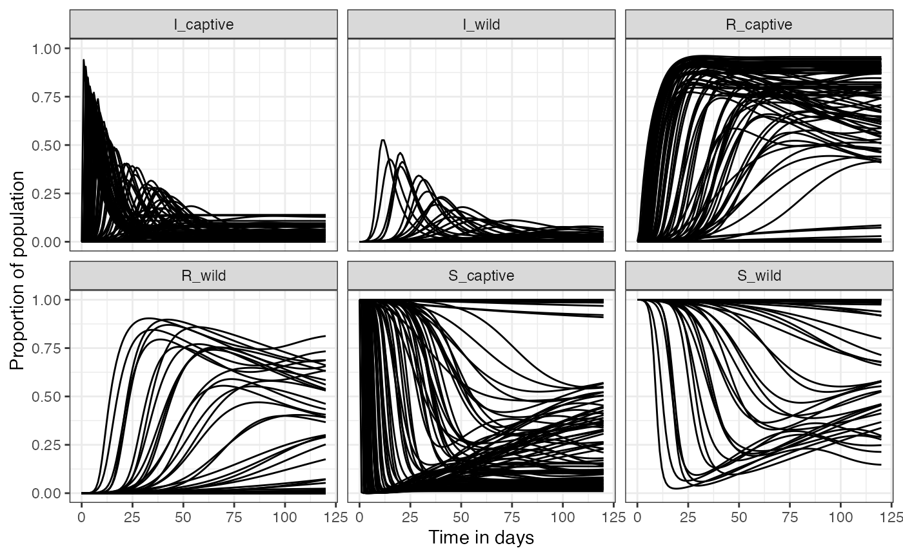
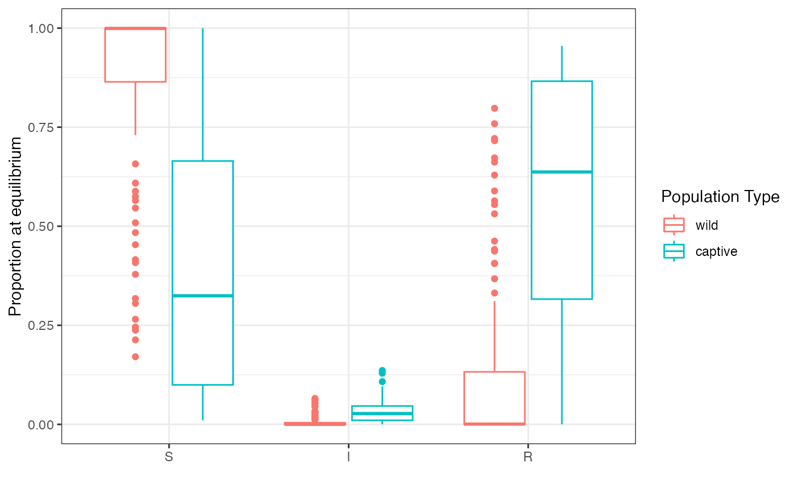

Workflow for the default projection using the wrapper function:
sirs_results <- run_sirs_projection(nsamples = 100, seed = 63)explore created object, which is a list column. Each row is a single projection, with associated initial states and parameters, the ode projection, and equilibrium:
sirs_results |> head()
#> # A tibble: 6 × 7
#> run_id inits params R0 FOI ode_proj steady_state
#> <int> <list> <list> <dbl> <dbl> <list> <list>
#> 1 1 <dbl [6]> <dbl [13]> 0.416 0.0000000865 <deSolve[…]> <named list [1]>
#> 2 2 <dbl [6]> <dbl [13]> 0.295 0.000000118 <deSolve[…]> <named list [1]>
#> 3 3 <dbl [6]> <dbl [13]> 0.0166 0.0000000193 <deSolve[…]> <named list [1]>
#> 4 4 <dbl [6]> <dbl [13]> 0.771 0.000000411 <deSolve[…]> <named list [1]>
#> 5 5 <dbl [6]> <dbl [13]> 0.0351 0.00000323 <deSolve[…]> <named list [1]>
#> 6 6 <dbl [6]> <dbl [13]> 3.27 0.00000443 <deSolve[…]> <named list [1]>To visualize:
# get results in proper format:
sirs_results |>
mutate(ode_df = map(ode_proj, as.data.frame)) |>
pull(ode_df) |>
list_rbind(names_to = "run_id") -> ode_df
ode_df |>
ggplot(aes(x = time, y = I_wild, group = run_id)) +
geom_line() +
labs(x = "Time in days", y = "Proportion of I_w individuals") +
theme_bw()
To visualize all compartments:
ode_df |>
pivot_longer(cols = -c(run_id, time), names_to = "compartment") |>
ggplot(aes(x = time, y = value, group = run_id)) +
facet_wrap(~compartment) +
geom_line() +
labs(x = "Time in days", y = "Proportion of population") +
theme_bw() To check for steady state (equilibrium):
sirs_results |>
mutate(steady_sir = map(steady_state, "y"),
steady_sir = map(steady_sir, as_tibble_row)) |>
pull(steady_sir) |>
list_rbind(names_to = "run_id") -> steady_sir
steady_sir |>
pivot_longer(cols = -run_id, names_to = "compartment", values_to = "proportion") |>
separate(compartment, sep = "_", c("sir_type", "pop_type")) |>
mutate(sir_type = factor(sir_type, levels = c("S", "I", "R")),
pop_type = factor(pop_type, levels = c("wild", "captive"))) |>
ggplot(aes(y = proportion, color = pop_type, x = sir_type)) +
geom_boxplot() +
ylim(0, 1) +
labs(x = "", color = "Population Type", y = "Proportion at equilibrium") +
theme_bw()
#> Warning: Removed 3 rows containing non-finite values (`stat_boxplot()`).